チキン・パルメザンを作る
チキン・パルメザンを作る
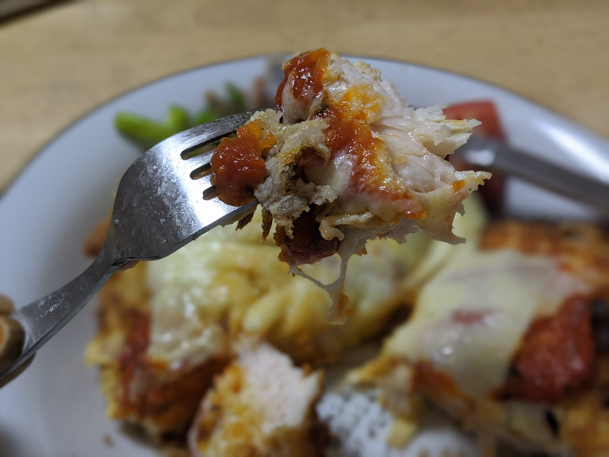
アメリカでは比較的ポピュラーな部類の料理で、「鶏胸肉は体にいいから」と選び、さらに皮を剥ぐまでしてるのに、それを揚げてあまつさえチーズすらかける自己矛盾の塊のような料理、それがチキン・パルメザンである。今回はこれを作っていきます。
まず鶏胸肉を用意します。
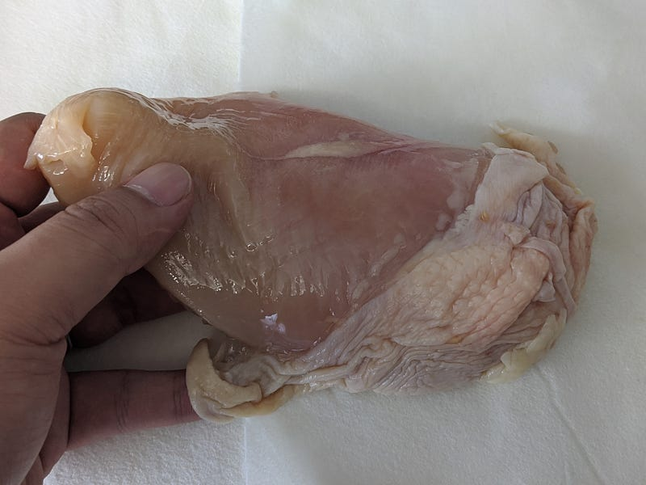
鶏胸肉はそのままだと火を入れたときに厚すぎるのと整形しにくいので、まず厚さを半分にするイメージで横から包丁を入れます。ちなみに今回は低温調理しません。低温調理するほど温度調節が難しくないので…
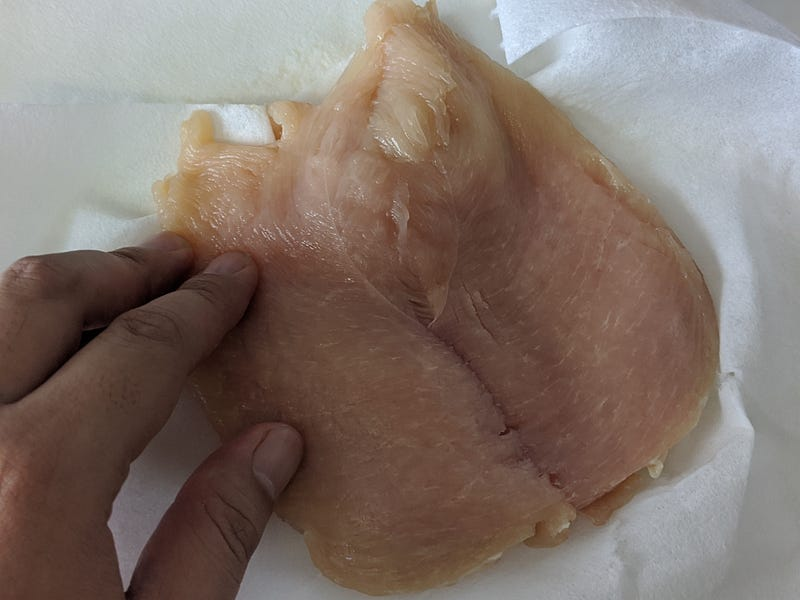
胸肉の外側から中心に向かって切るとよいと思う。
次に軽く整形したいので、お肉にサランラップをかけて肉たたきで全体を平たくしていきます。
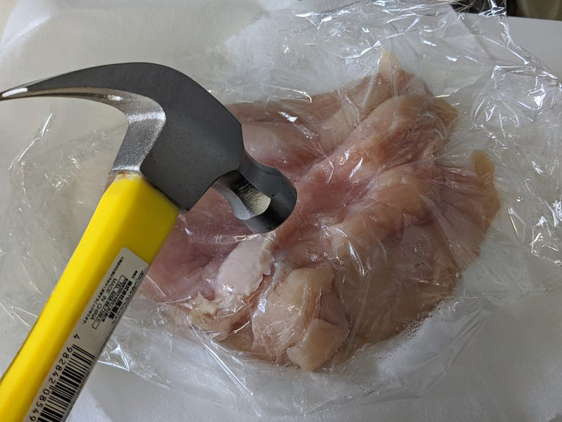
うちは肉たたきがなかったのでトンカチで代用。
整形が完璧である必要はないので、全体的に平たくするイメージでたたきます。
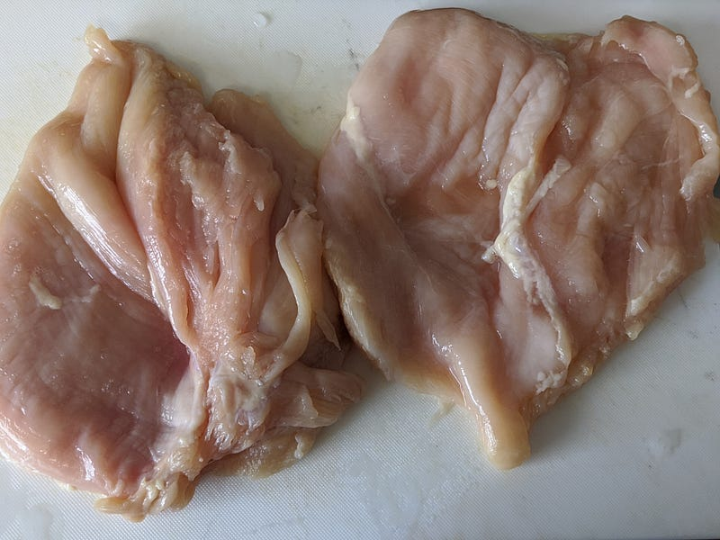
そのあと、塩胡椒。味を感じる程度の薄さがいいかな。あとでソースをかけるので。
ここからはこの肉に衣をつけてあげていくのだけど、ここからはタイミングや好みの問題で段取りが変わると思う。
うちは猫舌の子供がいるのもあって、ご飯をアツアツで出す必要性があまりない。なので、このあと肉をあげてから余熱で火を通しつつ、副菜を作ったりする。
でもアツアツじゃないとどうしてもいやな場合はこの後の段取りをすぐにできるようにするか、後述のオーブンのステップでちゃんと肉が暖まるようにする必要があります。
さて、それでは揚げ物の準備。小麦粉、卵、パン粉を用意します。卵は鶏胸肉二枚につき一つで充分。足りなさそうだったら少し水を入れてのばすといい。
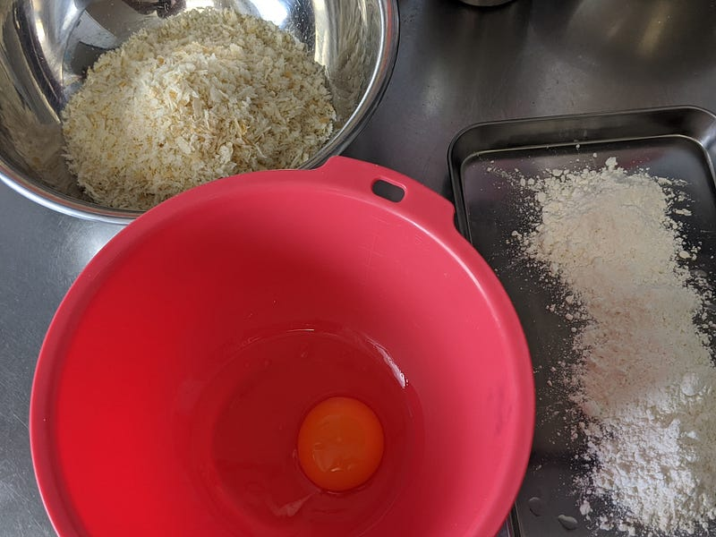
揚げ物の衣はケチケチせずにたっぷりつけるのがコツ。衣をしっかりつけてあげていきます。
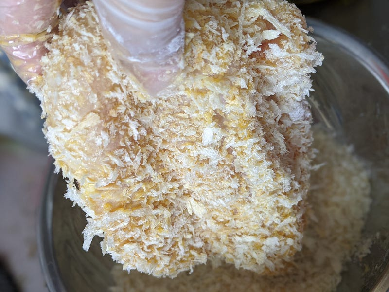
油は少量で充分。
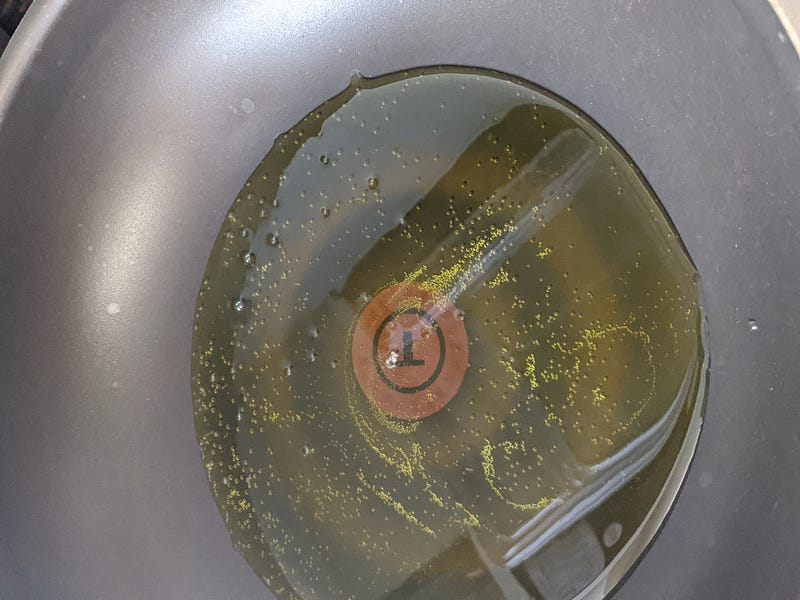
両面がキツネ色になったら、油からあげて、油を落としながら余熱で中まで火を通す。
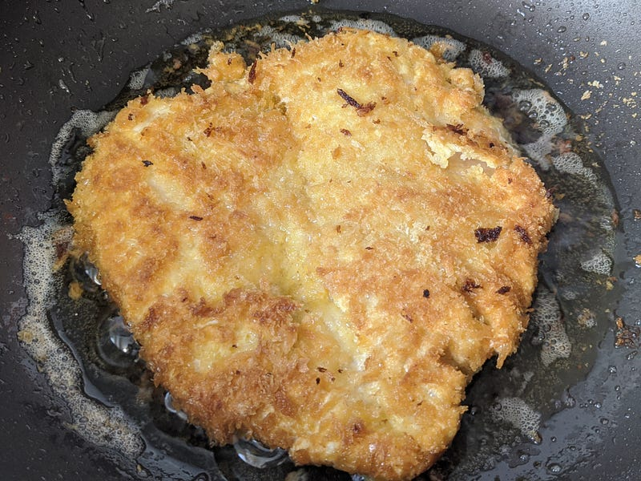
その間にソースの準備。トマトから作ってもいいけど、面倒くさかったので瓶入りのトマトバジルソースを買ってきた。
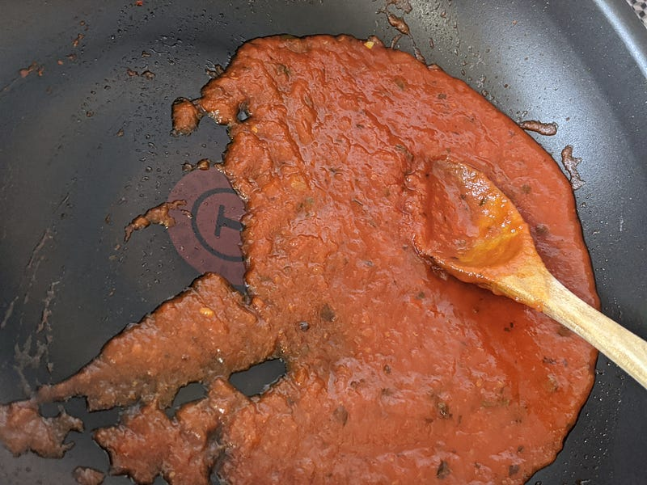
買ってきた奴はそのままで充分おいしいけど、ソースには少し味が薄そうだったので、フライパンにかけて、塩と砂糖を少しずつ加えて味を調節した。
肉も落ち着いたら次にオーブンを準備。今回は190℃にして、余熱。
余熱を待つ間に肉に最後のお化粧。トマトソースを上に満遍なく塗って…
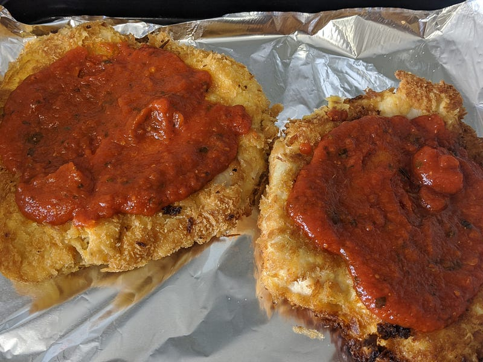
そこにとろけるチーズ…
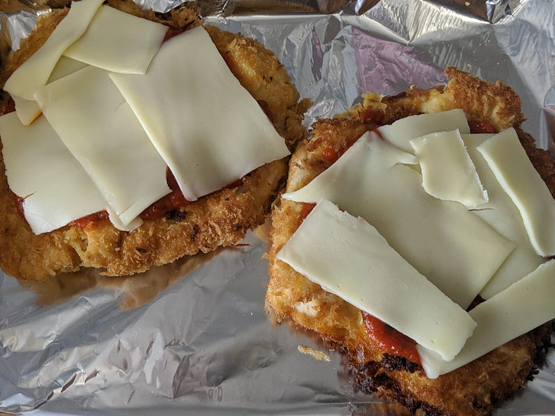
そしてパルメザンチーズをかける。
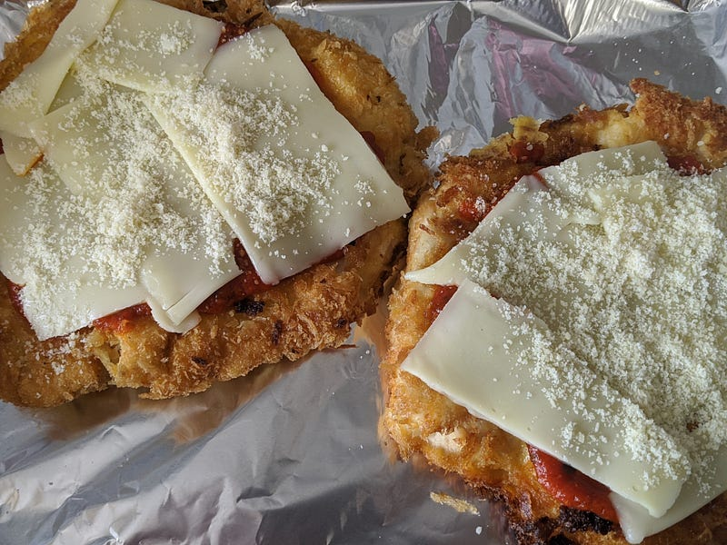
オーブンの準備ができたら、鶏肉の載った天板を熱源に近い位置に入れて調理。賞味10分ほどだろうか。よい感じにチーズが焦げたら出来上がり。
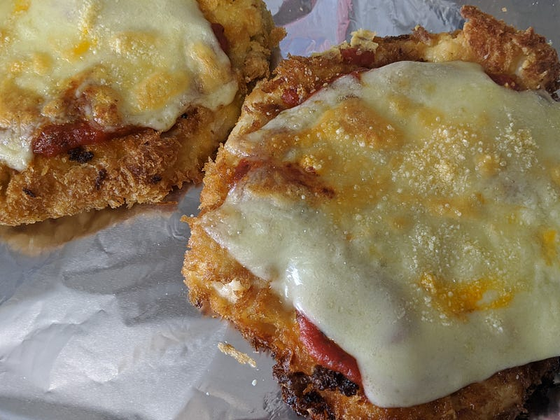
前述の通りアツアツがいい人はもっと時間をかけてオーブンであたためるとかして調節してね。
あとはよい感じに盛りつけてできあがり。余熱調理がうまいことできてればふわふわジューシーなチキン・パルメザンのできあがり！
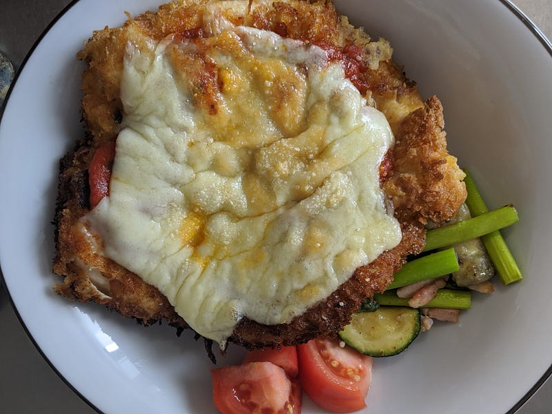
副菜をなにか添えて食べましょう。
ポイントは熱をどれだけ通すかなんだけど、わりとあまり考えずにやってできると思うので、揚げすぎ・焼きすぎにだけ気をつけて是非やってみてほしい。ふわふわの胸肉ができあたるとちょっとライフチェンジングです。